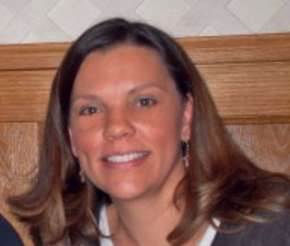

About Kim...
TRAINING, CERTIFICATIONS AND MEMBERSHIPS
I’ve been married for over 26 years. I am Mom to three wonderful grown kids and grandma to one awesome 4-year-old with another on the way! I am the founder of Soar On Eagles Wings and VP of Admin and Marketing at Bottoms School of Vocal Acoustics, www.bsva.net. I have the privilege of working from home, and watching my granddaughter three days a week.
I have over 20+ years as an Entrepreneur with experience in Start-Up Non-Profits and For-Profit Businesses; Networking and Marketing; My experience includes Creating, Developing, Training and Directing several Non-Profit Ministries including all aspects of recruiting, hiring, training, facilitating and fundraising. I was honored to be a part of developing a Will and Estate Planning Program and Grant Writing for the ministries of WorldVenture International, including all aspects of developing, creating and marketing. I have been a Mary Kay, Independent Beauty Consultant (former Director) for over 12 years.
My over 28 years’ children’s advocacy and volunteer work include Children’s Ministry, Acting Children’s Minister and Sunday School Program Coordinator; Awana Commander including developing, training and co-directed the mid-week program for over 130 children; MOPS Intl. Member, Mentor Mom, Moppets Teacher and Colorado Speaker; VBS Director; 20+ years volunteering for Public Schools including Chair of our Community Meals-in-Need Ministry, Pledge Committee Chair, Mother's Prayer Group; Small Group Bible Study Leader; Funeral Ministry Chair; Deacon Lead, and other church affiliations. Volunteer for Judy’s House for Grieving Children, Certified by The Dougy Center, OR., and was the Director of a Support Group for Grieving Children.
My heart has always been to teach children about Jesus, how much He loves them, and will always be there for them when others let us down!
I’ve encountered abused children in my work and volunteer career, and because of my experience, have always had a heart to give children hope, grace, forgiveness and unconditional love.
I have just recently started sharing my story on child sex abuse and have become an advocate and certified facilitator for child sex abuse prevention (csa) through Darkness To Light, Stewards of Children. I am also a member of the National Survivor Force Organization and The National Association of Adult Survivors of Child Abuse.
My sexual abuse started when I was around 5 years old, until I was about 12, by multiple abusers, and I was raped at age 17. I’ve spent many years in different kinds of therapy, support groups and counseling, and I know after years of healing my own inner child, I find my own healing deepen when I am able to use my past experiences to help others.
When I was 6, my grandmother found a church that would pick up my aunt and I and take us to Sunday School. My parents thought it was a great way to sleep in, I believe God knew how desperately I needed him and Jesus' love as a foundation. I believe this is what helped me to be able to heal...as confusing as it was. Shortly after starting Sunday School, I got very sick. It took weeks to figure out what was wrong with me, and when they finally figured it out, my appendix had ruptured. I was a sick little girl for about 6 months…in and out of the hospital and two operations. Even during that scary time...I knew Jesus was with me!
At 14 we moved to Washington St. to open a restaurant with our family. There, I meet my first real boyfriend. All I wanted was to escape! We moved several times together and ended up back in Colorado, where I got pregnant with my daughter at 18. I knew that my life needed to change. At 19, I became a single mom. I met my husband while I was pregnant…that’s another story! However, I do believe God sent Andy to me to learn what loving unconditionally really is. The love and blessings my marriage and children have given me are a gift from God! I’ve spent years not understanding that there really is unconditional love...and I am worthy!
I know it’s different for everyone...but my true healing and forgiveness has come from my Faith! I’ve felt for years that God would use me to be an advocate for child sexual abuse prevention, but it is just recently that I’ve started talking openly about my abuse. I encourage anyone silently suffering, to find your healing journey...don't give up!
I believe this is the next step in my healing journey, and I’m ready and open to what comes next! That is why I have started Soar On Eagles Wings!
Soar on Eagles Wings' goal is to educate adults and children about child sexual abuse prevention by providing a 2 hour certification training in the Colorado Region. Visit Soar On Eagles Wings on Facebook and LIKE our page to receive daily, helpful posts on how to keep children safe. Our prayer is to reach our community, as well as, online support worldwide. With Erin's Law being passed nationwide, NOW is the perfect time to educate the public and start the process of empowering our children so we can have future generations without child sexual abuse!